夏天里得瑟的冷笑话。 @ May 07, 2009
缺心眼和自以为是在我看来是一回事。那样的身体里面蕴藏着熊熊燃烧的力量，义正言辞，纵然前面有荆棘挡道，有妖魔鬼怪也不会胆怯，高举对这个社会无知的火炬，照亮前进的道路....
人群中总能搜索出这么几张勇往无前的面孔，天真无辜。挥舞着宰牛刀去杀鸡，啊呸，无一例外的不靠谱，是夏天里得瑟的冷笑话。
缺心眼和自以为是在我看来是一回事。那样的身体里面蕴藏着熊熊燃烧的力量，义正言辞，纵然前面有荆棘挡道，有妖魔鬼怪也不会胆怯，高举对这个社会无知的火炬，照亮前进的道路....
人群中总能搜索出这么几张勇往无前的面孔，天真无辜。挥舞着宰牛刀去杀鸡，啊呸，无一例外的不靠谱，是夏天里得瑟的冷笑话。
风车，俏皮；
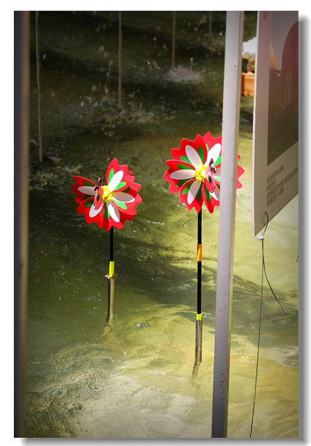
costa人性化设计的外带杯；
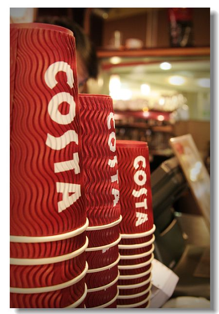
转动出五彩气流的风车；
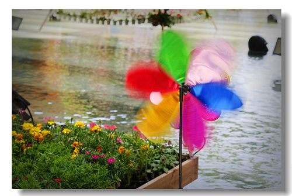
她的童心妈妈送的小熊项链；
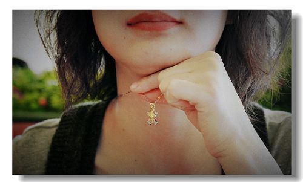
理想和现实的差距在于：理想在樱桃上，而现实却不在樱桃上；
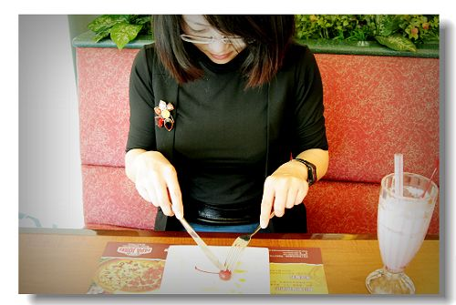
好朋友说喜欢自己拍的这张，这就传上来博取其欢心啦；
水游城-1楼的中午人很少，从天井散射进来的阳光被波光凌凌的水包裹着，柔和了建筑，这样的设计与风水有关吗？

好看？好闻？还是好吃啊？

看着就很享受！
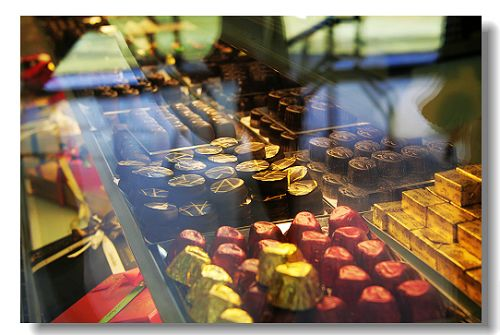
****************Dress Blog****************
@ZARA
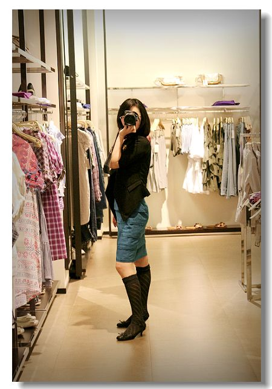
@COSTA

中午和以前的老领导们吃饭，不过不如和同辈的老朋友相见来得痛快，毕竟职位高出好远，在社会生活里也是永远走在前面的人。很开心，什么都没有改变似的，只是吃饭这个活动无法静下来交谈，总是热闹而奔放的进行着。
中间有人递手机给我，一听就猜出来是谁，比我大一岁的她在北京定居发展，正在登机准备去德国参加20多天的培训...当年在她面前我的内心可是无比清高，甚至居高临下的姿态...所以说袋子里装了100只球，即使拿出的99只是白球，千万不可断定最后一只也是白球，没准儿就是袋子里唯一的黑球呢。
其中一个领导在阅读和书写上对我有着渊源流长的启蒙作用，当年看过他的钢笔字我模仿过很多年，如今这字体早已改头换面，且因依赖电脑疏于练习而渐行渐远。《收获》也是从他处获得的一件珍藏多年的宝贝。此前很多年里无法进入阅读状态，停顿了一段时间。当重拾阅读的心境和欲望，我又继续订购每两个月一本的《收获》。上述两件事儿对于我的人生是极其宝贵的体验也受益非浅！
“你现在还写文章吗？”
他说：“早不写了，那些都是带着理想色彩的东西，和现实不符......你可千万别哭啊...”
对于走仕途的人是没有自我的，我认为。文学的确对他帮助不大，但在人的心灵空间里是否还会存有一些值得依赖的美好呢？
假如当年重新选择人生道路，假如留在那里，假如....人生没有假如，人生的十字路口说拐弯就拐弯了，哪容你考虑许久？人类总有羡慕他人生活的习惯，事实上他人生活也只是听到或看到的摸样，不身在其中岂能体会出酸甜苦辣？那么最重要的唯有努力并积极地过好现在的生活，才是对自己人生应付的责任！
中午没回家，Dress Bolg在办公室完成的。外面是件藏青色七分袖的短外套，中午的温度万万穿不上身了，回到公司外套遗忘在车上，所以只能拍下这件眼花缭乱、有着大大灯笼袖的连身裙。据说后天最高温度达30度，夏天终于来了。
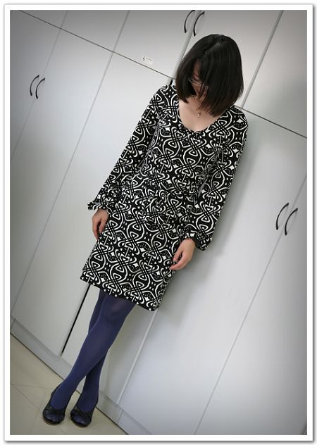

某天顺路带一同事，人家本着房价有上涨趋势，早买早放心的原则去看房。
USA Today上面一组有趣的数据：根据2008年8月NAR对一万个买房和卖房人的调查， 首次购房者的年龄中位数是30岁， 收入中位数是6.06万美元， 典型价格是16.5万美元。有趣的数据。
美国：30岁、收入与房价比为6万：16.5万
中国南京：27岁、收入房价比为10万：97万
（97万房价是按照最近买房的几个年轻人的平均房价计算，工作第3、4年全年收入在10万左右。）
我们公司有无息贷款政策，可借15万，分三年还清，多贷部分按照银行利息计算，但上限不超过20万（含15万无息部分）。例如一套95万/120平的房子，首付45万，剩下50万做公积金贷款。
坚持房价不会持续下跌的人总是喜欢拿房子是“刚需”来说事。不像股票这种“弹性需求”。“刚需”是硬性的，必需的东西。人人都得住房，房子总会有销路。上述这组数据比较下来，美国比南京健康许.........多啊！
不太理解的是公司提供免费宿舍（两人一套），不急于结婚、找人同居或准备一辈子独身，工作才2、3年...放着免费的房子不住，（只要不结婚，在公司工作，住一辈子都没人赶你走）背起沉重的负担购房。总之我是特别不喜欢背债过日子的人！这样的买房人必须保有一份稳定的、年收入最少10万的工作，生活质量才不会太差。当然还贷的前四年会比较艰苦。由此可见现在年轻人是多么的的自信和乐观！
黑底细条纹双开叉西服+黑色小象体恤+黑色蛋糕裙+红色腰带+红色磨砂皮鞋
**5年前的蛋糕裙，百搭款，仍然深得喜爱；

**黑底细条纹双开叉西服，袖口被挽起两道，削弱了正装效果；

亮片、钻石和珠子锈出的饱满的小象图案，摒弃了亮片的低俗；


**难打理的红鞋子，舍不得经常穿它。
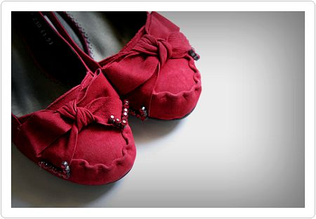
这次上海车展出了一款雪铁龙全新“C3毕加索”MPV款新车，车身为彩虹般的渐变色。
**尺寸：4.08X1.73X1.62米
**五个座位
**行李架下的空间将达到500升（按VDA标准）
**全景式玻璃车顶
**仪表台的材料使用了高质量的软质塑料
**四款发动机选择：VTi95和VTi120汽油发动机，以及HDi90和HDi110柴油发动机
估计这车的性能也好不到哪里去，借一时尚的外衣增加卖点而已。擦块漆，补起来难度大了。说到毕加索，N年前曾有茶友留言说他们东大的老师都买这车...奇了怪，我到现在还记得？今天在街上看到“MG SW3”，忽然觉得这车的外型象被打包的package，黑色前保险杆、防擦条及后保险杠象是封箱带，让这个package看起来非常结实，呵呵~
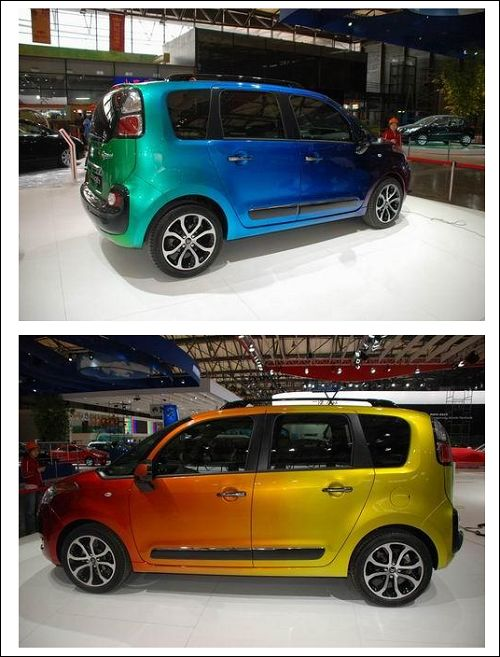
转自“暴暴的图象日志”。
这组照片简直太摆了，在招待所同一个房间里干什么的都有：
从凶杀到嫖娼；
从狂欢到SM；
从拍AV片到吸毒...
极具现实的讽刺意义。
以后住酒店，是不是会想到这些画面呢？
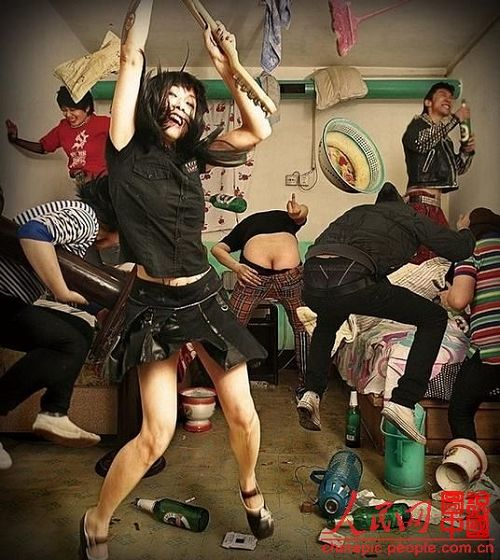
演出时间：2009年6月1日—2日 19：30
演出地点：蓬蒿剧场
剧场地址：东城区交道口南大街 东棉花胡同
票价：80元，50元（学生）
剧场电话:64006472
24小时热线：13911208207
编舞： 小珂，婓高
演员： 小珂，婓高
作曲：殷漪
现场音乐：虎子
艺术家介绍：
小珂：现居北京，编舞，舞者，观念肢体艺术家
六岁习舞，持续了１２年中国民族舞的学习与表演，１８岁考入上海复旦大学，开始自行研究现代舞，１９９８年成立个人舞蹈工作室“小珂舞蹈工作室”，２００２年开始进行跨媒介的艺术合作，２００５在上海与张献等艺术家成立组合嬲肢体剧团，２００７年在北京成立ＵＧＬＹ观念肢体工作室。其作品曾授邀在上海，北京，香港，荷兰，德国，意大利，法国，奥地利，挪威，新加坡，英国，爱尔兰等地多次上演。近年，以独立艺术家的身份更多地参与到国际合作的创作项目中，建立了与德国，日本，瑞士，爱尔兰的长期合作。
婓高：现居北京，编舞，舞者，影像艺术家
早年研究人类语言学，２５岁开始专攻现代舞，曾多次与欧洲著名舞团编导合作，并建立Bodies and Buildings机构。其作品涵盖舞蹈剧场，户外肢体，舞蹈电影等多个领域，并受到欧洲艺术发展联合会的重视与支持。频频授邀在欧洲各国，美国，加拿大，日本展演。近年着重研究中国文化与当代艺术的沿承发展，并建立了与不同领域艺术家的广泛合作。
殷漪：现居上海，音乐家，环境声音艺术家
早年成立死亡诗社乐队，２００３年作为最新兴的一批严肃音乐创作者活跃在上海的音乐，剧场等演出中。２００５年作为组合嬲肢体剧团的成员，开始剧场音乐的创作，并授邀在上海，北京，香港，荷兰，德国，意大利，奥地利，挪威，新加坡，英国，爱尔兰等地上演。２００６年受聘在上大美院，复旦视觉艺术学院教授声音创作课程。近年创立了“声音旅行”，“边缘．场”等艺术项目，其鲜明的音乐风格得到国内外众多好评。
虎子：现居北京，音乐家 摇滚乐手
早年成立“NO”，“病医生”，“苍蝇”等摇滚乐队，和中国最早的电音组合“FM3”。出版发行了“叛客”，“口痴”，“两个人的旅行”等多张音乐专辑。并多次受邀参加荷兰，德国，意大利，瑞士等国的音乐节，进行中国实验音乐的演出。近年组建了中国第一支电音摇滚乐队“宠物同谋”，乐队时髦的音乐和外形很快就成为各大时尚媒体的新宠。与此同时他还积极保持着与舞蹈，影像等艺术形式的跨媒介合作。


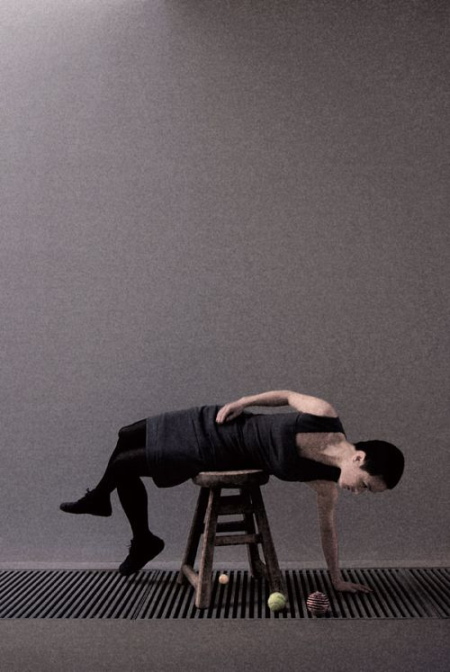
上一次去动物园还是儿童时期，恰好放假打算去看看真的熊猫。劳动节的下午赶到红山动物园快四点了。里面的人比动物还多，操着各地口音的大人带着小孩，放眼望去乱糟糟一片，好似赶集即将散场的画面，这种时候我总是心生厌恶，人类就象蝗虫一样吞噬着大自然。早些时候看过一部幻想记录片，大致意思是说人类用上千年制造出的文明世界，从人类消失的那天开始，大自然只需要两百年就可将其夷为平地，恢复原状。
没想到南京唯一的动物园如此糟糕，动物们被关在各自的院落和笼子里，没有良好的卫生环境，仅仅稍微高级点的灵长类动物还有点小娱乐设施，其它的基本就是水泥钢筋围起来的生活。人有人的命运，这些动物呢？一生将在水泥钢筋里等待死亡。
恨透了那些站在笼子外面对着里面睡觉的动物大呼小叫、往里面砸东西、用硬物敲打笼子的人类！因为你的到来它们就应该来段精彩的表演或者杂耍吗？什么样的大人带着什么样的小孩，他们不感到廉耻，他们对生命本身就没有尊重！
或许，那些动物对于人类卑劣行为早已习以为常，活着，对于它们来讲就是等待死亡！
猴山更象是个垃圾场，看着那些纵容孩子往下扔东西的家长，想象着他们的孩子长大后的人生，以及由他们组成的这个社会，油然而生地心寒！


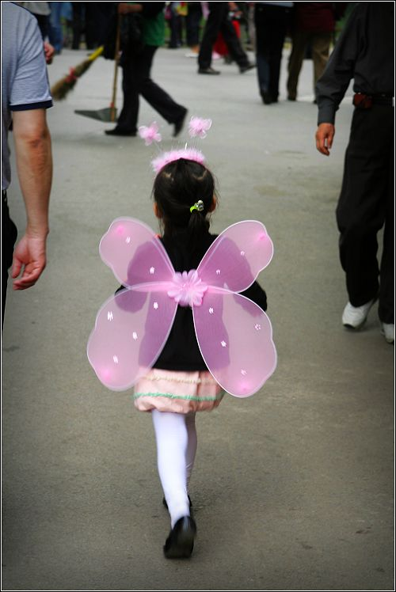
**狮子与老虎的故事**
三只狮虎兽，是雄狮和雌虎杂交的后代。成年狮虎兽体型据说比狮子老虎都大，体重达400公斤以上。如果它们诞生于此，那么它们将不知道外面还有属于它们的广褒天地。那么它们也许会安于现状，而活得稍微快乐些？
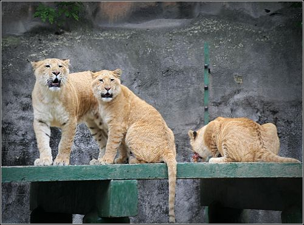
动物园将狮子、东北虎和孟加拉虎各一只放在同一个饲养圈里。不知道哪个鸟人想出来的艘主意，是为了繁殖狮虎兽吗？
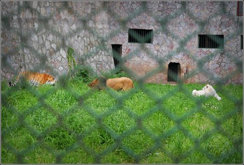
雄狮子从远处走向围栏边，人群渐渐沸腾，大人小孩吆喝着从别处涌到我们四周。
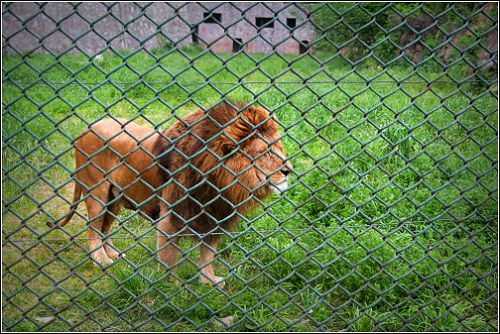
接着这只狮子朝着某个方向大声吼叫了几声，那声音低沉而穿透力强，着实令人震撼。

然后它卧在草坪上，看着那个方向，显得极其忧郁。
有人会反问：你怎么知道它是忧郁呢？
因为我发现隔着狮虎兽的院子的另一边是两只成年雄狮和雌狮。与隔壁那只雄狮相比这只混养的雄狮显得格外魁梧高大，有森林之王的气质。它这么卧着，静静地凝视，听着那边狮笼传来回应的吼叫.......象被关押在监狱里的犯人，靠着某些渠道仍然与同类保持着交流，你能说它是没有感情的冷血杀手吗？而外面的人类极其丑陋地兴奋着，象一群野蛮的小丑！

如果你家里有宠物的话，就不会无视它们的眼神：茫然、漠然、鄙视、空洞、愤恨，毫无生气。有一件事情让我相信动物是有心理活动的，小区有户人家养了只小狗，因为主人怀孕而将它弃之门外，后来这只小狗见到这家主人就怒吼。知道它的时候它已经在小区里流浪，靠好心人喂些食物活着。警察叔叔抓无证狗狗时，它就消失了。


孤独的河马生存于咫尺之间，它身后的人造水池里蓄满了污浊的绿水，墙壁上喷着班驳的粪便，它躺在那里一动不动，睁着眼睛等待黑夜来临。
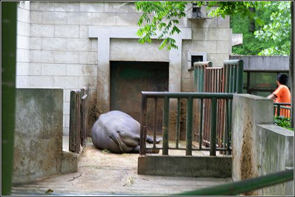

去的太晚的缘故动物园已经赶人出园了，没能找到熊猫馆，匆匆地看了一眼趴在玻璃窗后面的猩猩，因为房间里没有开灯而显得异常昏暗，那只猩猩象小孩子一般天真地望着玻璃外面的人类。它的饲养员在门外大声催促，她这就要下班，将她的工作遗留在黑暗的房间里过夜。这只透着渴望与无辜眼神的猩猩，只能拿着它的小树枝孤独地睡去？希望它的睡梦中有无比美妙的梦境，有成片茂盛的树林和果实，有自己的伙伴，有......本属于它的猩猩的命运！
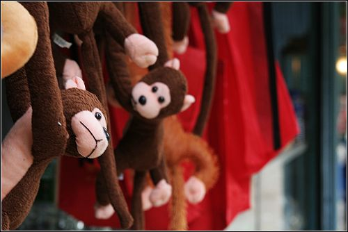
我们来到这里是要感受动物的快乐？还是感受人类的快乐？总之从动物园出来我一点也不快乐，也丧失了小时侯有关动物园的快乐记忆！曾经梦想过当一名动物饲养员的我在颤抖，感到作为人类的耻辱，我哭泣着怨恨这貌似文明的世界。想要拯救它们，却分明感到虚弱的如它们一般无助。同时我还感受到了愤怒！！！

到家的时候《直播南京》播了一半，一般会在下班路上听93.7转播的《直播南京》，到家或者先做饭或者先遛狗，今天先躺沙发看新闻了，广告来了就换别的台，电视上的广告真TM的多，电视台也有强迫症了。看着看着毫无知觉的睡着，然后在电视里的争吵声中醒来，抖擞精神关上电视，带luke外出散步。
这两天luke又开始张着大嘴呼啦呼啦的喘气，就差滴下几滴欲望的口水，在家里来回转悠。不晓得哪家母狗发情，使得它迎着早晨吹进屋内的风急促地耸动鼻子捕捉着什么...那种火热的渴望显得很可怜，然而任何主人都会是无奈。今晚特地带它多转转，包括小区从未踏足的地方，发现还有更喜欢的园林设计，更增加了对这个园子的喜爱。遇到一只雪纳瑞，天下爱宠物的人是一家，毫不介外的聊天，对方是对五十多岁的老夫妻，话语轻柔。
老先生：“这是什么狗啊？”
每每有人问同样的问题，我心里既纳闷又暗喜。
纳闷的是连这个狗都不认识，暗喜咱luke物以稀为贵。
老先生又说：“两只大耳朵真好玩，象猪八戒.....”
我就差四脚朝天倒地上，心里忿忿不平：哼，有这么帅的猪八戒吗？
****************************************************
桑格格为问问写了篇童话，咱不是吃写字的饭，但咱有鉴赏能力，要推荐部电影给问问，这部电影是晚上刚刚看完的，叫《Bedtime Stories》，看得好开心，大人小孩通吃的童话故事，讲一个不负责任的衰男在哄孩子入睡时，漫不经心地把诸多经典故事“改编”得乱七八糟，没想到故事里的人物竟神奇地光临现实了……和问问的气场应该相投，一定要看哦！喜欢里面那只叫“小疯子”豚鼠，那眼睛比赵薇的还大，能看得你灵魂出窍。（怀疑问问这样中文专业的人会不会看我这又臭又长的裹脚布？所以推荐电影的同时也试探一下她是否真会看我写了什么，坏笑ing）**点击下载观看**